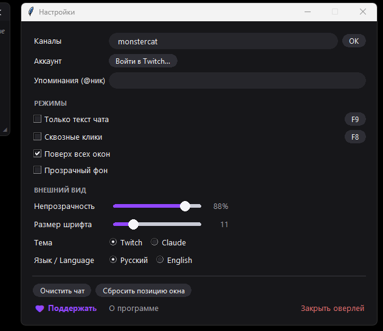

Twitch Chat Overlay
Чат Twitch поверх любых окон и игр · смайлы 7TV с анимацией · вкладки каналов
Lightweight always-on-top Twitch chat overlay for Windows
Бесплатно · без установки · open source (MIT) · Windows 10/11



📌 Поверх всегодержится над играми и приложениями; для игр — режим «оконный без рамки»
👻 Только текст — F9убирает рамку и фон: парящий чат поверх игры, клики проходят насквозь
😀 Смайлы Twitch и 7TVанимированные двигаются как в чате; работают в РФ без VPN через зеркала
🗂 Несколько каналовобщий поток «Все» + вкладка на каждый канал
🏅 Как настоящий чатцвета ников, значки модеров/VIP/сабов, клик по нику открывает профиль
✍️ Отправка сообщенийвойдите через Twitch и пишите в чат прямо из оверлея
💜 Упоминаниятегнули — сообщение подсветится, окно мигнёт
⚙️ Всё настраиваетсяпрозрачность от 30%, темы, бинды, размер, RU/EN — на одном экране
Как запустить
- Скачайте TwitchChatOverlay.exe кнопкой выше — устанавливать ничего не нужно.
- Запустите и введите название канала (можно несколько через запятую).
- Готово: перетаскивайте за верхнюю полосу, правый клик или ⚙ — настройки, F9 — только текст, F8 — сквозные клики.
⚠️ Windows SmartScreen при первом запуске: «Подробнее» → «Выполнить в любом случае» — стандартное предупреждение для программ без платной цифровой подписи. Код открыт, можно проверить на GitHub.